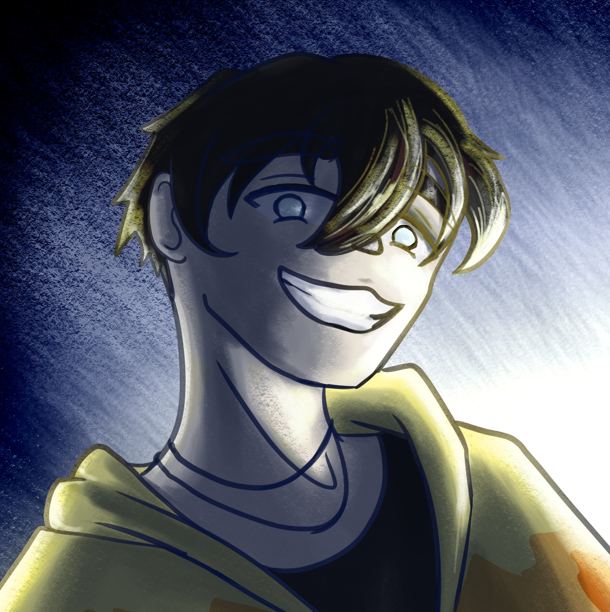
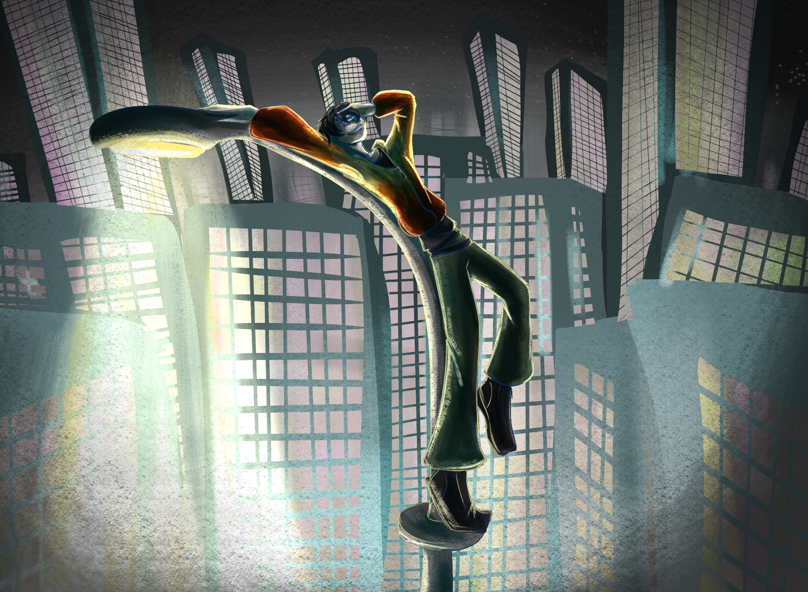

Matt
Matt
He/Him
He grew up in a small pocket of forest outside Brickport with his parents and 10 siblings. He loves plants, nature, animals and theater. He went to the same college where he studied acting and law. He moved in with Eve and they share a small apartment that's full of Eve's inventions. He struggled with rent until he met Victor and joined Keystone PI.


hobbies
He is very theatrical and takes part in a theater club at the library. He loves climbing trees at the local parks and feeding birds.
personality
He is very spontaneous, eccentric, he loves throwing his voice randomly and entertaining others.